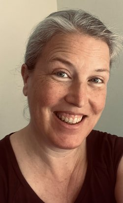
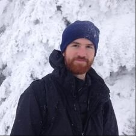
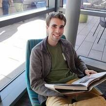
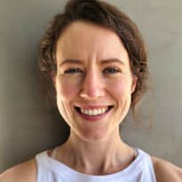
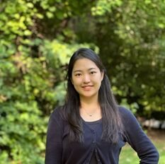
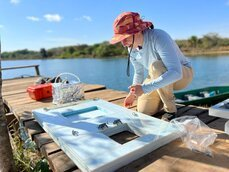
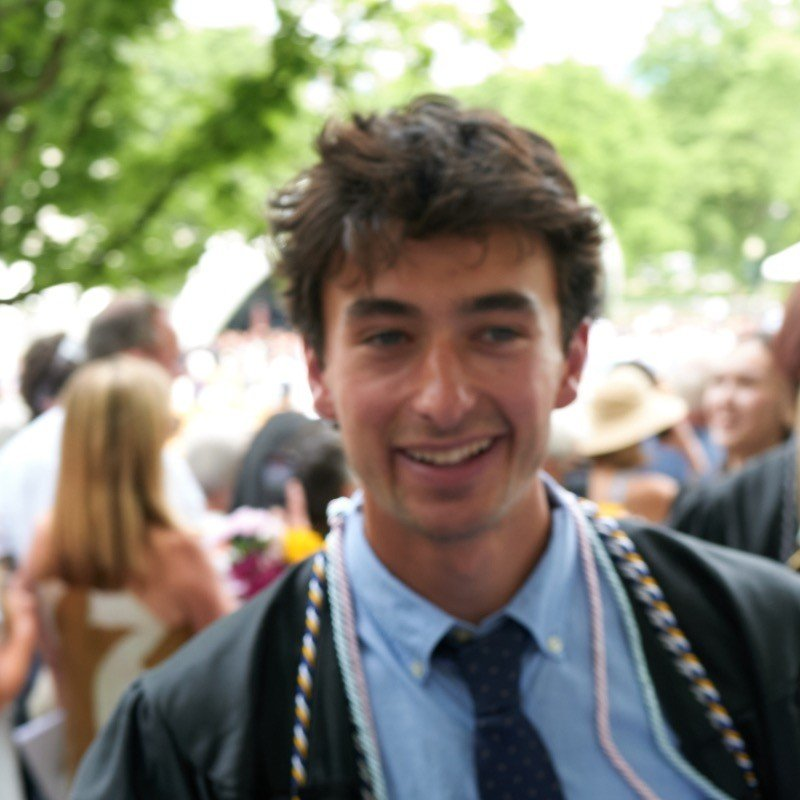
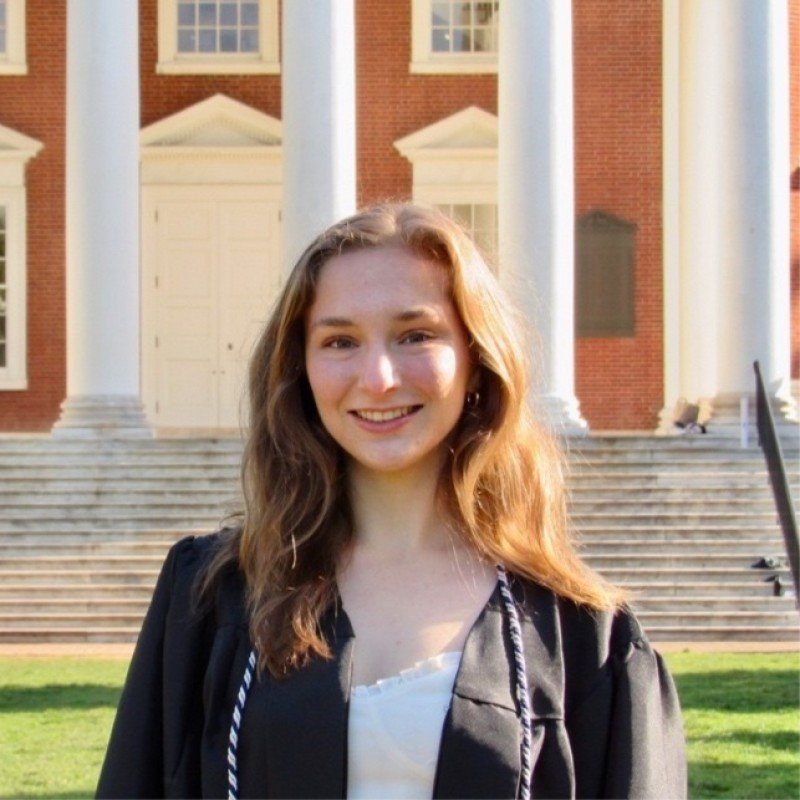

Bernhardt Lab
Aquatic–Terrestrial Biogeochemistry
People
Since 2004, the lab has been built around a simple idea: everyone in it should be gaining the data, skills, publications, and mentorship they need toward their own next career step, while producing science the group is proud of together. Below are the people doing that work right now, and the alumni who've carried it on — into faculty positions, agencies, and industry — since 2004.
Check out our Lab Photo Album to see more of our lab in action.
Current lab members

Principal Investigator
Emily received her PhD in Ecology and Evolutionary Biology from Cornell University in 2001 and was a member of the Duke Department of Biology faculty from 2004–2026. She joined the faculty of Cornell University in 2026. The core of Emily's interests are in watershed biogeochemistry and freshwater ecology, with most of her current effort invested in understanding how the ways in which people live on and use the landscape alters the structure, function, chemistry and biodiversity of receiving streams and wetlands. At Cornell, Emily serves as the Director of the Atkinson Center for Sustainability.
Click here for Emily's professional CV and here for her full bio.

Data Scientist
Joined in 2017 after an MS at the University of Washington. Mike's facility with wrangling data into useful, reproducible formats underpins the StreamPULSE and MacroSheds projects. GitHub

PhD Student
Joined the lab in 2020 after a BS in Watershed Science and Environmental Policy at Colorado State, working closely with Mike Vlah on StreamPULSE and MacroSheds before starting his PhD in 2022. Studies how saltwater intrusion and sea level rise affect soil and ecosystem carbon stocks. NASA FINESST Fellow. GitHub · LinkedIn

Postdoctoral Scholar
Earned her PhD in Duke's Civil and Environmental Engineering program in 2026, co-advised by Emily since 2023, and continues in the lab as a postdoctoral scholar. Studies mercury contamination from small-scale and industrial gold mining in Peru's Madre de Dios region and mining frontiers in Ecuador. NSF GRFP recipient and former EPA ORISE scholar. Google Scholar

PhD Student
Undergraduate degree in environmental studies, Mt. Holyoke (2024); joined the Bernhardt and Wright labs jointly in Fall 2024. Studies plant species introductions in salt marshes, focusing on competition between introduced Phragmites and native Spartina cordgrass.

PhD Student
Undergraduate degree in Biochemistry and Earth & Oceanographic Science, Bowdoin College (2021); MPhil in Earth Sciences, Cambridge (2022). Previously a research assistant at Woodwell Climate Research Center. Works at the interface of biogeochemistry and engineering, designing low-cost autonomous sensors for aquatic methane flux. NSF GRFP recipient.

PhD Student
Fascinated by both bryophytes and biogeochemistry. Earned his bachelor's degree from Middlebury College, then worked as a lab manager at Dartmouth. In summer 2026, Grady got a jump start on his dissertation work by leading "team moss" through a summer of intense field work. NSF GRFP recipient. LinkedIn

PhD Student
Graduated from the University of Virginia in 2024 with joint degrees in Environmental Science and Statistics. Since then, she has been a research fellow at the Oak Ridge Institute for Science and Education in Corvallis, OR. NSF GRFP recipient. LinkedIn
Visit the Join the Lab page if you're interested in becoming part of the research group.
Lab alumni
Nearly 70 students, postdocs, and technicians have come through since 2004 — most now leading their own labs, agencies, and research programs. A sampling, organized by role:
Every DukeBGC alumnus has shaped how the lab operates — the group's shared expectations, safety practices, and mentoring commitments are written down in the lab's living contract, revised together at lab meetings. New and prospective members can read the full document from the Join the Lab page.